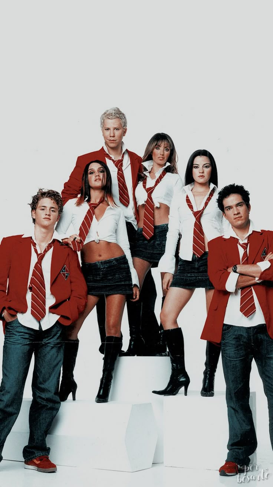
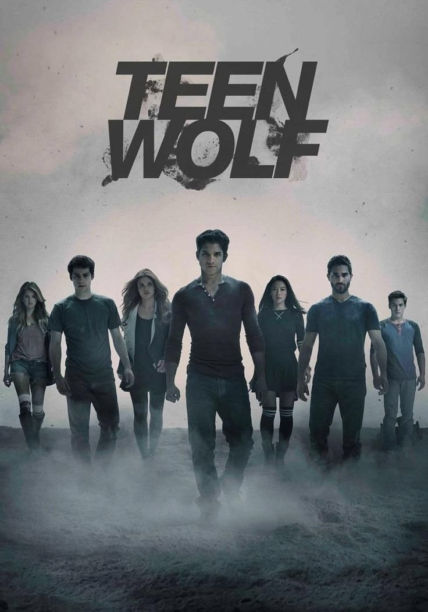
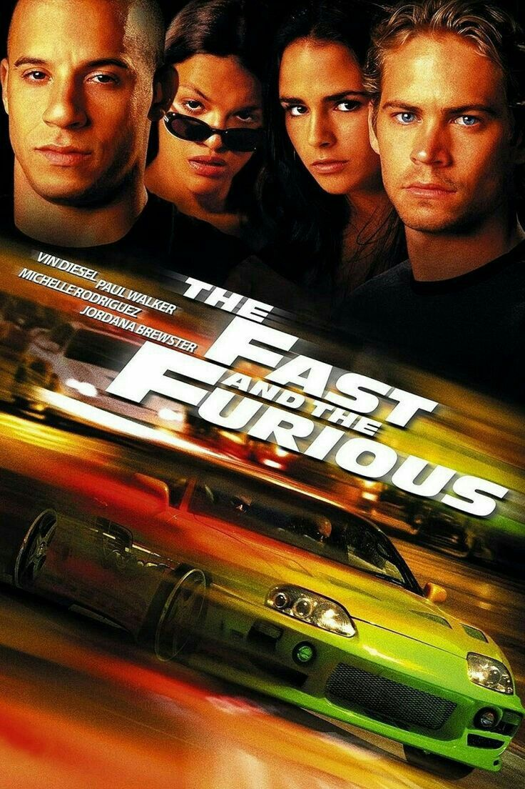
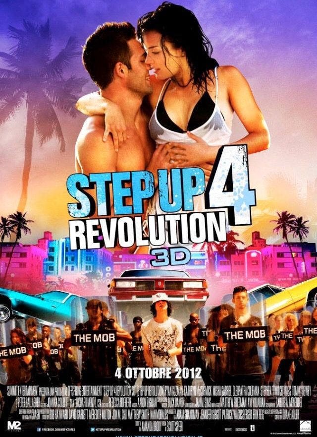
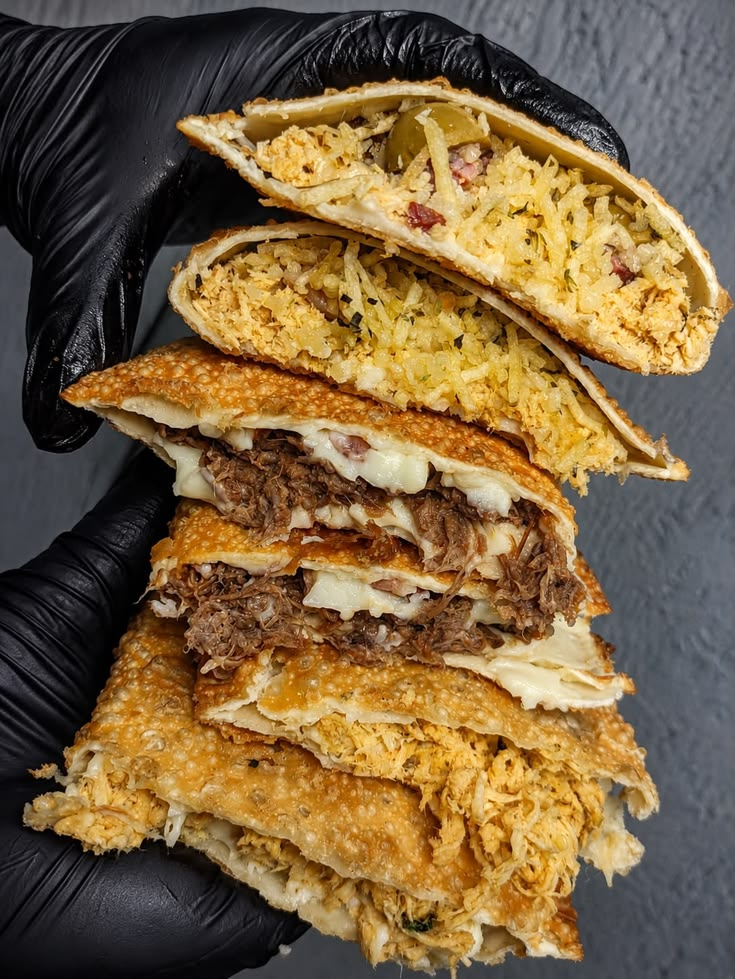
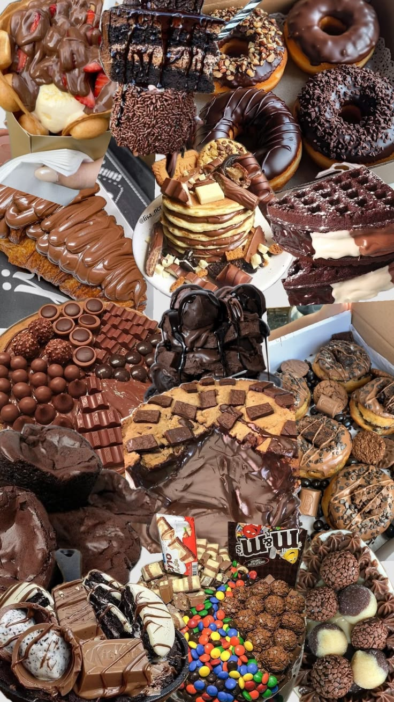
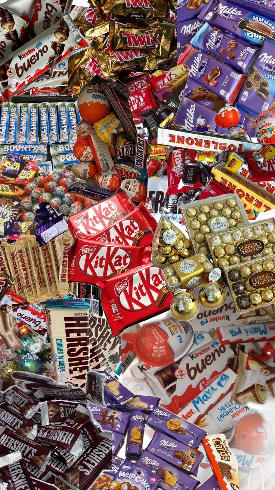
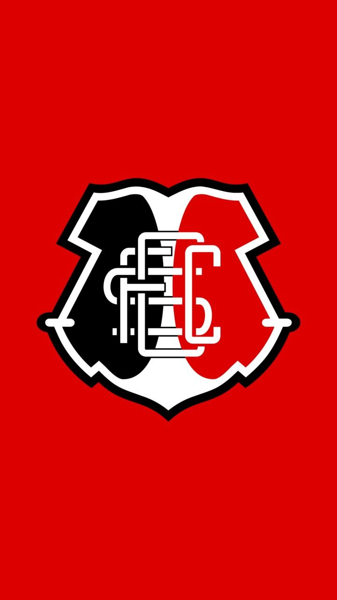
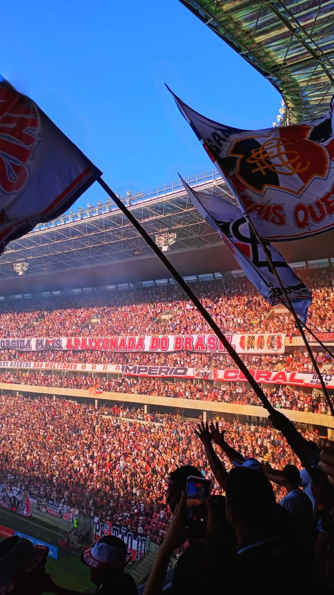

🍑 “Cu”
Tudo é cu. Não importa o assunto: ela consegue colocar “cu” em absolutamente qualquer coisa. Um talento inexplicável KKKKK.
Digite a senha para entrar no presente da Laura.
Preparei uma pequena surpresa. Não é nada complicado: só quero que você se divirta, sorria e lembre do quanto é especial.

Toque nos cartões para abrir cada mensagem.
As perguntas da versão anterior continuam aqui.
tu és minha Luz.
Uma carta com as palavras que eu queria deixar guardadas aqui.
Minha gatinha, eu te amo muito, e tu é muito importante para mim. Eu te amo, nega. Aproveita teu dia, minha gostosa.
Eu te amo muito, tu é minha Luz e meu amor todo, veio pra minha vida e floresceu como lírios.
Eu admiro o amor pelos felinos, o amor pelos cachorros, o amor por todo animal vivo, a compaixão e bondade dela com os pequenos.
O sorriso dela me encanta, me fascina, me deixa louco, é algo perfeito e sem defeitos, eu olho e fico admirado e perdido no sorriso.
Tu és muito forte. Existe uma força dentro de ti que considero especial. Tu tens uma personalidade forte. Tu és muito brava, mas eu amo te irritar. É uma das minhas demonstrações de carinho.
Porque tem coisas que só a Laura fala desse jeitinho — e eu amo cada uma delas.
Tudo é cu. Não importa o assunto: ela consegue colocar “cu” em absolutamente qualquer coisa. Um talento inexplicável KKKKK.
Simples, direto e muito ela.
Do nada, a Laura ativa o modo internacional.
Uma youtuber surgindo sem aviso prévio KKKKK.
A risadinha que dá até pra ouvir enquanto a gente lê.
Se ela termina uma mensagem com ponto final, o clima mudou. “Tá bom” é uma coisa. “Tá bom.” é outra completamente diferente.
E são essas manias, essas frases e esse jeitinho tão teu que fazem você ser a Laura que eu amo. ❤️
Feliz aniversário, minha gatinha! Muitos anos de vida, saúde e muita paz. Sabe que eu te amo muito, e é muito, muito mesmo! Que Deus te abençoe sempre e sempre.
Eu quero que tu aproveites teu dia. Pode comer o que tu quiser hoje! Espero que você saiba o quanto eu te amo. Te amo, gatinha. 💚
Toque na fotografia ou no botão para destacar o veículo e ouvir a gravação correspondente, quando há uma fonte identificada. Só um áudio pode tocar por vez.
Imagem de referência enviada. A gravação disponível é identificada como Mazda RX-7, com partida, aceleração e escapamento.
O Supra laranja da referência. Gravação identificada como Toyota Supra A80, com aceleração e escapamento.
A fotografia original azul foi preservada. Gravação identificada de motor e escapamento do R34, incluindo partida e aceleração.
A R15 que você pediu para destacar. A gravação de marcha lenta foi publicada pelo TMCBlog e identificada como YZF-R15.
Os áudios com licença Creative Commons são reproduzidos a partir do Wikimedia Commons e exigem conexão com a internet. A gravação da R15 é carregada do vídeo original do TMCBlog. A galeria mostra somente veículos com fotografia disponível: Mazda RX-7, Toyota Supra MK4, Nissan Skyline GT-R R34 e Yamaha YZF-R15 preta.
Para quem ama o Brian, o Skyline azul e a história que marcou as telas. Uma homenagem feita especialmente para Laura.
Paul Walker interpretou Brian O’Conner na franquia Velozes e Furiosos. Aqui, a fotografia enviada por Gabriel se torna interativa: toque nela para descobrir as mensagens.
Fotografia fornecida para este presente. Sem voz, falas ou áudios atribuídos ao ator.
Sem datas inventadas. Apenas pontos que você me contou e que merecem ficar registrados.
Boy In Luv, do BTS, faz parte das coisas que você gosta.
Brian O'Conner e o Nissan Skyline azul R34.
Seu amor pelos felinos, cachorros e todo animal vivo.
Uma luz na sua vida e uma homenagem que permanece.
Flores que você ama e que lembram como você floresceu na minha vida.
Algo que me encanta, me fascina e me deixa admirado.
O player oficial do Spotify está aqui. A reprodução depende da sua conta e das permissões do Spotify.
Cinco histórias que fazem parte do universo da Laura. Toque em “Ler mensagem” para descobrir um carinho; use “Ouvir no Spotify” para abrir a música escolhida.

♫ RBD · Rebelde

♫ Famy · Ava

♫ Wiz Khalifa feat. Charlie Puth · See You Again

♫ Jennifer Lopez feat. Flo Rida · Goin’ In
♫ Carmen Twillie e Lebo M. · Circle of Life
Pastel, acarajé e tudo que é chocolatudo!



Ela gosta de comer. Comer é agro, comer é tech, comer é tudo de bom!

“De todos os amores que eu tive, tu és o mais querido.”
🖤🤍❤️ · O Mais Querido — hino do Santa Cruz

Quatro fotografias reais, guardadas aqui com todo o cuidado.
Ayasha foi uma luz na tua vida.
Ela estaria orgulhosa, ela sabe que teve a melhor mamãe do mundo, e um dia ela voltará para onde nunca deveria ter sido tirada.
O amor que vocês viveram não desaparece. Ele continua nas lembranças, nos detalhes e em todo carinho que ela deixou em você. A Ayasha sempre vai ter um lugar especial na sua história e no seu coração.
Eu te amo muito, Laura, tu és minha luz e meu amor todo. Tu vieste para a minha vida e floresceste como lírios; eu me apaixono todos os dias por ti. Tu és a pessoa mais especial da minha vida, te amo, gatinha.
Com amor, Gabriel (zx).
Ver tudo de novo